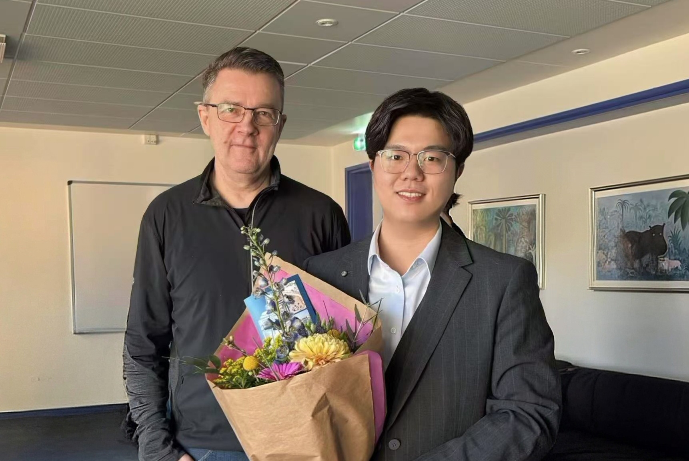
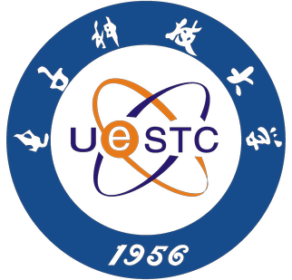

Zhichen Lai 赖志宸
I'm a Researcher.
About
Associate Research Professor, Fuzhou University, China.
Zhichen Lai (赖志宸) is currently an Associate Research Professor at the College of Computer Science and Big Data, Fuzhou University, where he is also a member of the Fujian Key Laboratory of Network Computing and Intelligent Information Processing. He was selected for China's Ministry-Level Overseas Talent Introduction Program (教育部国家海外引才项目) in 2025.
He received his Ph.D. in Computer Science from Aalborg University in March 2025 and served as a Research Fellow, advised by MAE and ACM/IEEE Fellow Prof. Christian S. Jensen, Prof. Dalin Zhang, Prof. Huan Li, and Prof. Hua Lu.
Previously, he was a Junior Visiting Research Fellow at the University of New South Wales in 2024. He obtained his M.S. in Computer Science from Sichuan University in 2021 under the supervision of Prof. Jiancheng Lv, and his B.S. from the University of Electronic Science and Technology of China in 2018.
Research Interests
Representative Publications
MovSemCL: Movement-Semantics Contrastive Learning for Trajectory Similarity
Zhichen Lai, Hua Lu, Huan Li, Jialiang Li, Christian S. Jensen
AAAI 2026 (Oral, CCF-A)
Lightweight Correlated Time Series Forecasting Enhanced with Model Distillation
Zhichen Lai, Dalin Zhang, Huan Li, Christian S. Jensen, Hua Lu, Yan Zhao
IEEE Transactions on Knowledge and Data Engineering (CCF-A, CAS Q1, JCR Q1)
ReCTSi: Resource-efficient Correlated Time Series Imputation via Decoupled Pattern Learning and Completeness-aware Attentions
Zhichen Lai, Dalin Zhang, Huan Li, Dongxiang Zhang, Hua Lu, Christian S. Jensen
SIGKDD 2024 (Oral, CCF-A)
E2USD: Efficient-yet-effective Unsupervised State Detection for Multivariate Time Series
Zhichen Lai, Huan Li, Dalin Zhang, Yan Zhao, Weizhu Qian, Christian S. Jensen
WWW 2024 (Oral, CCF-A)
LightCTS: A Lightweight Framework for Correlated Time Series Forecasting
Zhichen Lai, Dalin Zhang, Huan Li, Christian S. Jensen, Hua Lu, Yan Zhao
SIGMOD 2023 (Oral, CCF-A)
Organizations



Contact
Address
No. 2 Xueyuan Road, Minhou County, Fuzhou, Fujian, China
zhla@cs.aau.dk